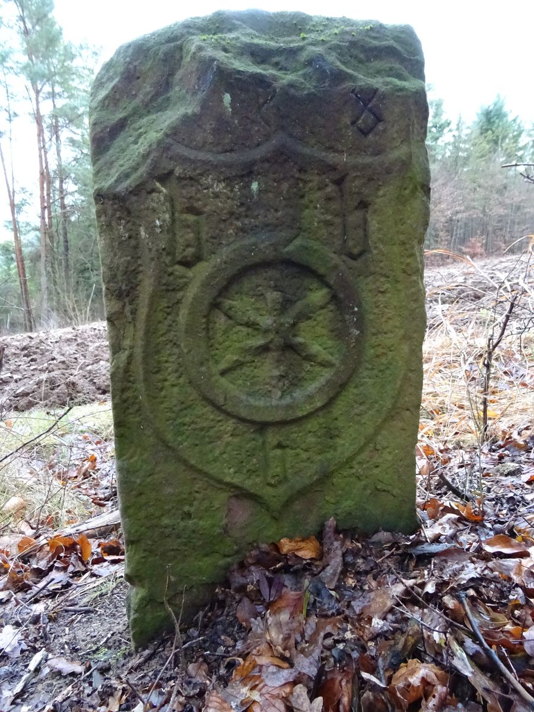

Rund 30 Kilometer lang ist die Grenze, die Tauberbischofsheim von seinen
Nachbarorten trennt. Über Jahrhunderte war sie mit Steinen markiert. Wo sie standen, wie sie
aussahen und welche Zeichen sie trugen, hielten die Grenzgänger in Protokollen fest – das älteste
stammt von 1569, das jüngste von 1893.
Diese Website führt die neun erhaltenen Grenzbeschreibungen Stein für Stein zusammen und
vergleicht sie mit dem, was bei den Begehungen von 2017 bis 2021 im Gelände noch zu finden war. Für jeden Stein lässt sich
verfolgen, wann er zum ersten Mal erwähnt wird, wie er beschrieben wurde und ob er heute noch
steht.

Stein 58 von 1508 beim Heidenkessel am Hang des
Wieselbergs, an der Grenze zu Dittwar: Wappenschild mit Mainzer Rad. Foto: Hendrik Beierstettel
394Steinpositionen aus den Quellen
142davon im Gelände wiedergefunden
124stehen noch am ursprünglichen Platz
14Dreimärker, an denen drei Gemarkungen zusammentreffen
Die Gemarkung Tauberbischofsheim grenzt an Impfingen, Hochhausen, Dittigheim, Dittwar,
Königheim, Dienstadt, Großrinderfeld, Grünsfeldhausen und Grünsfeld. Bis 1803 war
Tauberbischofsheim eine kurmainzische Amtsstadt; mehrere Nachbarorte gehörten zum Hochstift
Würzburg. Viele Steine tragen deshalb auf der Bischofsheimer Seite das Mainzer Rad und ein
kleines „b“ für Bischofsheim, auf der Rückseite das Zeichen des Nachbarorts.
Die Quellen
Grundlage sind die Protokolle der Grenzgänge von 1569 (wiederholt 1580), 1608, 1683, 1700,
1749 und 1872, die Großrinderfelder Grenzbegehung von 1784 und die Grenzberichtigungen von
1887 bis 1893. Bei jedem Grenzgang wurde die Grenze abgeschritten; die Protokolle zählen die
Steine, beschreiben ihre Zeichen und nennen ab 1608 auch die Abstände in Ruten. Wie die Angaben
ausgewertet wurden, steht unter Quellen und Methode.
Weitere Seiten
Die Grenzgänge – was jede Grenzbeschreibung enthält und wie sich der Bestand verändert hat
Geschichte – die Grenzgänge im Zusammenhang der Orts- und Landesgeschichte